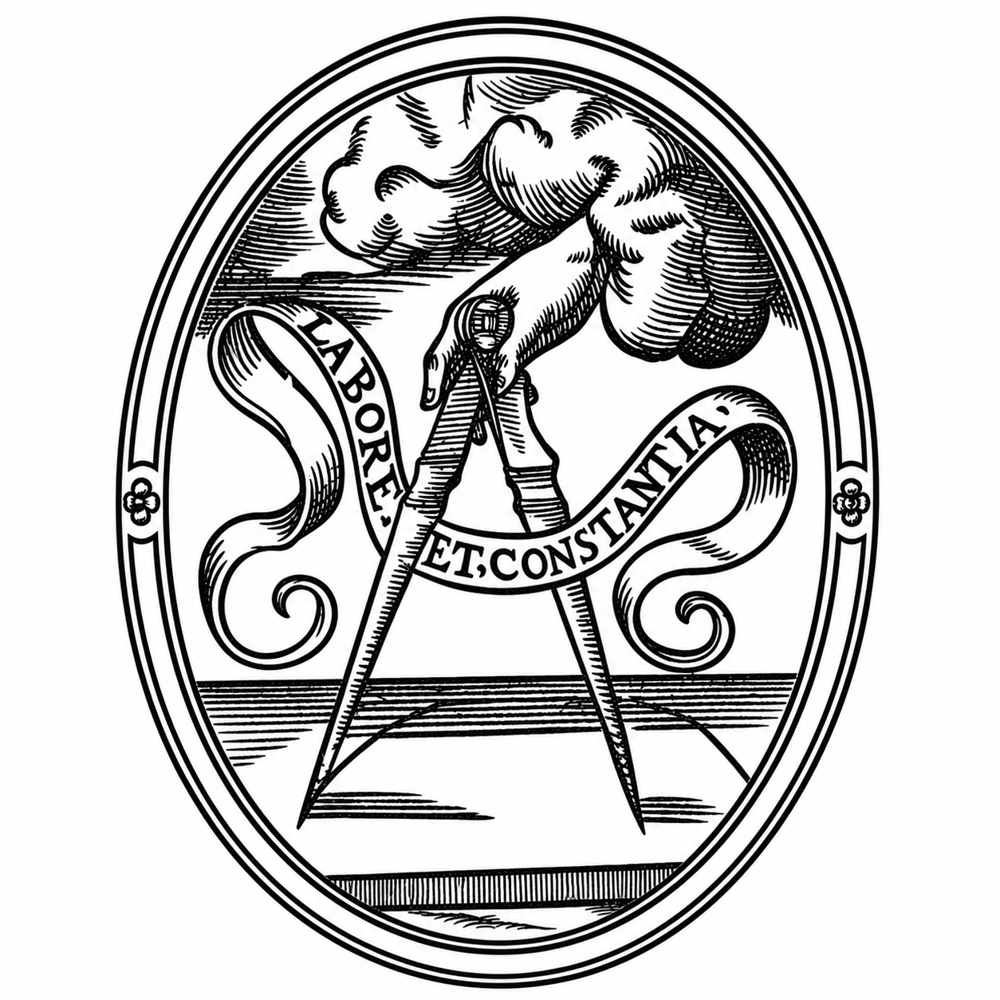

Een autonome Gentse club binnen Koperen Passer vzw, opgericht in 1999. In de eerste plaats een Gentse club — en met de leuze Plus Oultra uitgesproken een dynamische.
Club Koperen Passer Oost-Vlaanderen 3 (O3) werd in 1999 opgericht binnen het kader en het doel van Koperen Passer vzw. Het was de derde club binnen de KP-afdeling Oost-Vlaanderen, die ondertussen dertien clubs telt.
Op 11 januari 2007 namen de leden van O3 de groepsnaam KP-Artevelde aan, om de club beter te positioneren tussen de diverse andere KP-clubs. Voor de administratieve herkenbaarheid onder de talrijke clubs van vzw Koperen Passer behoudt de club het nummer O3.
De naam verwijst naar Jacob van Artevelde, de Gentse volksleider uit de veertiende eeuw. Ons prachtige wapenschild werd ontworpen door ons achtbaar oud-lid Maurits Agon, in een vroeger leven architect.


Steeds verder. Onze leuze is het devies van Keizer Karel. Daarmee maakt de club duidelijk waar ze voor kiest: niet stilstaan, maar elk jaar opnieuw op zoek gaan — naar een nieuwe stad, een nieuw verhaal, een nieuwe invalshoek.
O-3 stelt zelf haar programma samen, met een eigen bestuur van vrijwilligers. Gent en omgeving vormen ons vertrekpunt: musea, wandelingen, lezingen en tafelmomenten.
Wij zijn een van de dertien clubs van de KP-afdeling Oost-Vlaanderen. Leden zijn welkom op de activiteiten van de andere clubs en van Koperen Passer vzw.
Aanvragen verlopen via het secretariaat van Koperen Passer vzw. Zij verwerken je aanvraag en nemen zo spoedig mogelijk contact met je op.
Onze club wordt geleid door vrijwilligers uit de eigen ledenkring. Bekijk wie wat doet op de bestuurspagina.
Wil je deelnemen aan onze activiteiten? Vul het formulier in en verzend het. Je aanvraag gaat naar het secretariaat van Koperen Passer vzw, dat zo spoedig mogelijk contact met je opneemt.